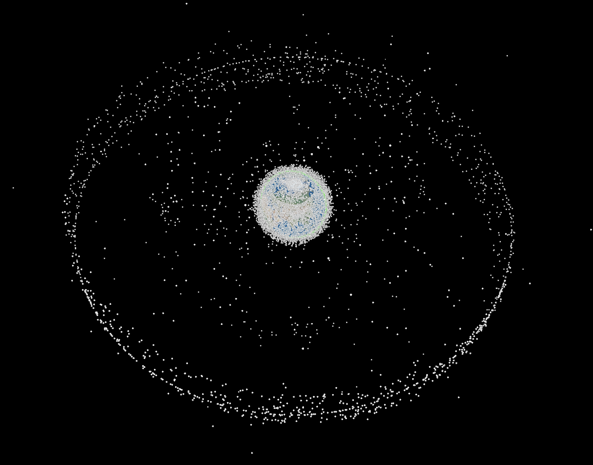

Bienvenue à la vingt quatrième infolettre !
C’est le printemps ! Le temps est bon, il fait 41,6°C en Californie avant la fin de l’hiver.
Bienvenue à cette infolettre, coécrite avec Mélina ❤️.
L’infographie
Qu’il est difficile de choisir une seule infographie. Pour ce mois-ci, c’est finalement une vidéo de tous les lancements de fusée dans l’espace depuis 1957 (ne pas avoir peur de tout ce qu’il y a là haut). Attention, grand final pour l’année 2025 !
Source : données recueillies par Jonathan McDowell et disponibles sur https://planet4589.org/, infographie faite par Peter Atwood et explications aussi iciLe site satellitetracker permet par ailleurs de suivre l’ensemble des quelques 12 000 satellites qui gravitent autour de la Terre. Et cela en fait un petit nombre autour de la planète bleue/grise …

Les prochains évènements du réseau
Une foison d’événements et d’informations ce mois-ci. Pour résumer :
- Un nouvel Open Science Meet-up à propos des replication packages en économie le 2 avril 2026 - lien ;
- un atelier du réseau sur la génération de commentaires de graphique par LLM le mardi 14 avril 2026 à 10h - lien ;
- un appel à contribution pour la conférence uRos du 18 au 20 novembre 2026 à Paris.
Génération de commentaire de graphiques : retour d’expérience et pistes d’amélioration à partir d’un exemple sur les statistiques agricoles - 📅 mardi 14 avril 10h, Paris (DG Insee) et visio
Le SSM Agriculture a mené un PoC pour que des LLM génèrent des commentaires sur l’évolution d’indicateurs agricoles à partir de graphiques. Si l’approche semblait prometteuse pour produire un premier jet que les analystes pourraient ensuite affiner, un premier point d’étape a mis en évidence des limites importantes (erreurs fréquentes sur les valeurs numériques, inversions de tendances, comparaisons incorrectes entre territoires …).
Dans le cadre d’un travail de recherche, des étudiants de l’Ecole polytechnique ont travaillé à rendre plus robuste cette expérimentation. Ils ont ainsi mis en place un cadre d’analyse pour quantifier les erreurs et proposé des améliorations pour répondre aux défauts identifiés.
Le SSM Agriculture et les étudiants nous présenteront ainsi leurs travaux le mardi 14 avril à 10h, en visio et en présentiel à l’Insee (en salle 4C-458). La présentation devrait durer 30 minutes. Tout le monde est le bienvenu !
Si vous voulez l’ajouter dans votre agenda, voici une invitation agenda.
Les mises à jour seront faites sur la page de l’événement.
Replication packages en économie - Open science Meet-up - 📅 jeudi 2 avril 2026 13h30, visio
Le prochain Open Science Meet-up de l’Insee portera sur le thème : Replication packages en économie : préparation, bonnes pratiques et attentes des revues, surtout lorsque les données sont confidentielles.
La reproductibilité des résultats occupe aujourd’hui une place croissante dans la recherche empirique en économie et dans les politiques éditoriales des revues scientifiques. De nombreuses revues demandent désormais aux auteurs de fournir un replication package, c’est-à-dire l’ensemble des données, du code et de la documentation permettant de reproduire les analyses publiées.
Lors de ce Meet-Up, Lars Vilhuber (Cornell University), Data Editor à l’American Economic Association, présentera les principes et les bonnes pratiques associés à la préparation et à la diffusion des replication packages. Il reviendra notamment sur les exigences croissantes des revues scientifiques, les standards qui se développent dans la communauté économique et les enjeux de la reproductibilité des travaux empiriques.
Cette rencontre sera l’occasion d’échanger sur la manière dont ces pratiques contribuent au développement d’une recherche plus transparente et plus ouverte, en particulier dans les domaines de l’analyse économique et statistique.
Elle s’adresse à toutes celles et ceux qui souhaitent mieux comprendre les enjeux de la reproductibilité des analyses économiques et de la diffusion ouverte des travaux de recherche.
Rendez-vous le jeudi 2 avril de 13h30 à 14h15 en distanciel à ce lien.
Contribuez à la conférence sur l’utilisation de R dans la statistique publique (uROS) - 📅 18-20 novembre 2026, Paris
L’Insee accueille l’édition 2026 de la conférence uRos (use of R in official statistics) les 18, 19 et 20 novembre 2026 au centre Pierre-Mendès France, à Bercy.
Cette rencontre annuelle des utilisateurs de R en Europe et dans le monde sera l’occasion de valoriser les nombreux investissements en R faits à l’Insee et au sein du SSP. La liste des thèmes ainsi que toutes les informations pratiques sont en ligne sur le site de la conférence.
Si vous souhaitez y assister, vous pouvez d’ores et déjà vous inscrire en ligne.
Si vous souhaitez contribuer, l’appel à contribution est ouvert jusqu’au 15 juin sur le site de la conférence. Vous pouvez soumettre :
- une présentation classique de 15 minutes ;
- une présentation flash de 5 minutes ;
- un tutoriel d’environ 2 heures.
N’hésitez pas à nous contacter sur uros2026@insee.fr.